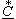

Если комплексная величина отличается от комплекса С только знаком мнимой части, то она называется сопряженным комплексом  (рис. 2.12) (зеркальное отображение вектора С относительно оси действительных чисел Re).
Итак, если C = CejΨc = C(cosΨc + jsinΨc) = a + jb, то
= Ce−jΨc = C(cosΨc − jsinΨc) = a − jb.. (2.21)
Произведение комплексно-сопряженных чисел
C · = CejΨc·Ce−jΨc = C2e0 = C2(2.22)
есть действительное число, равное квадрату С2 их модуля С = |C|.
Это свойство используют, например, при делении комплексных чисел в алгебраической форме: умножая числитель и знаменатель на сопряжённый комплекс знаменателя, получают ответ в алгебраической форме:
(2.23)
(2.23)
Такую форму умножения и деления комплексных чисел часто применяют при написании программ для ЭВМ.